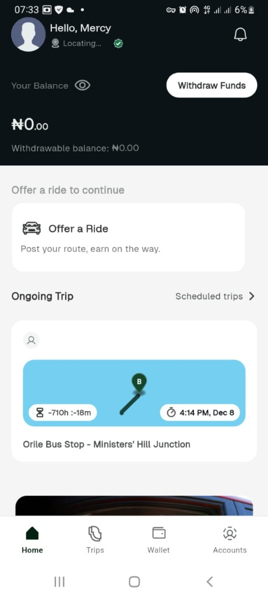
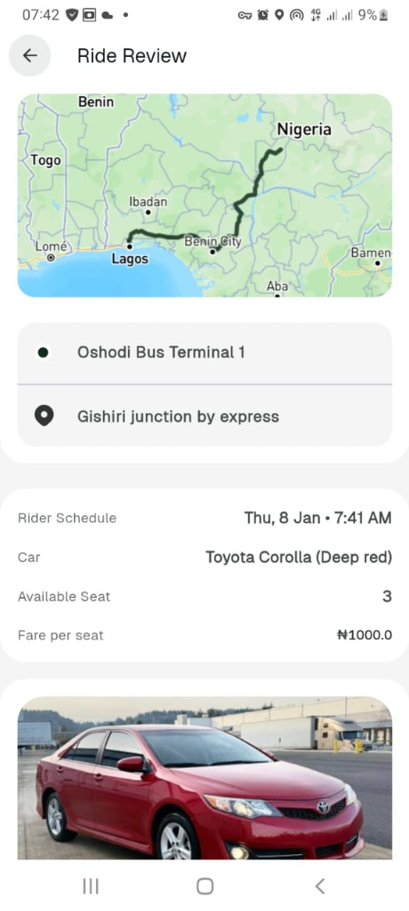
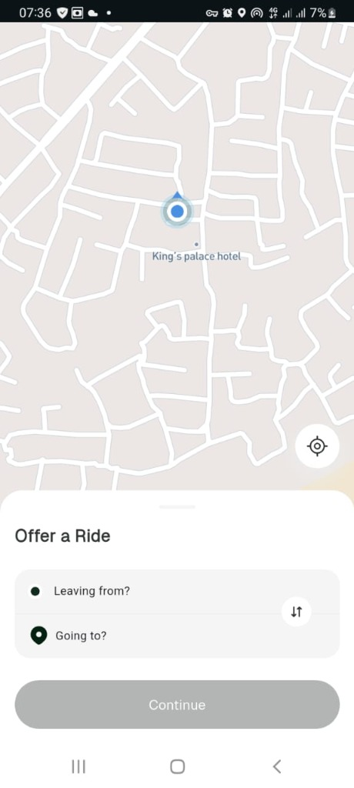
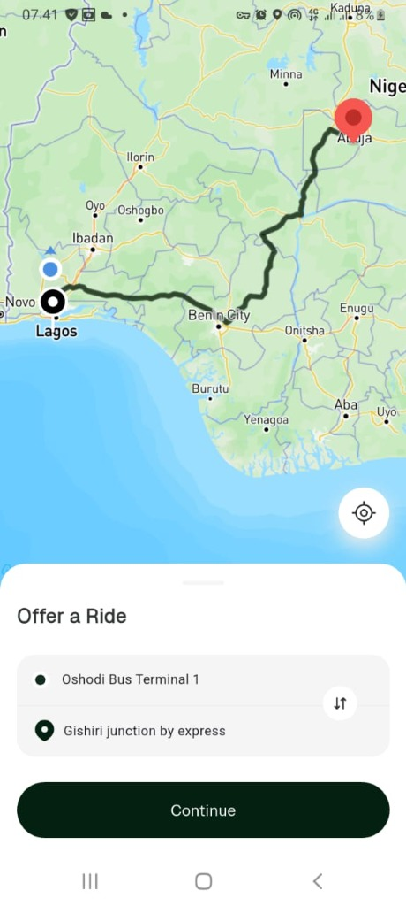
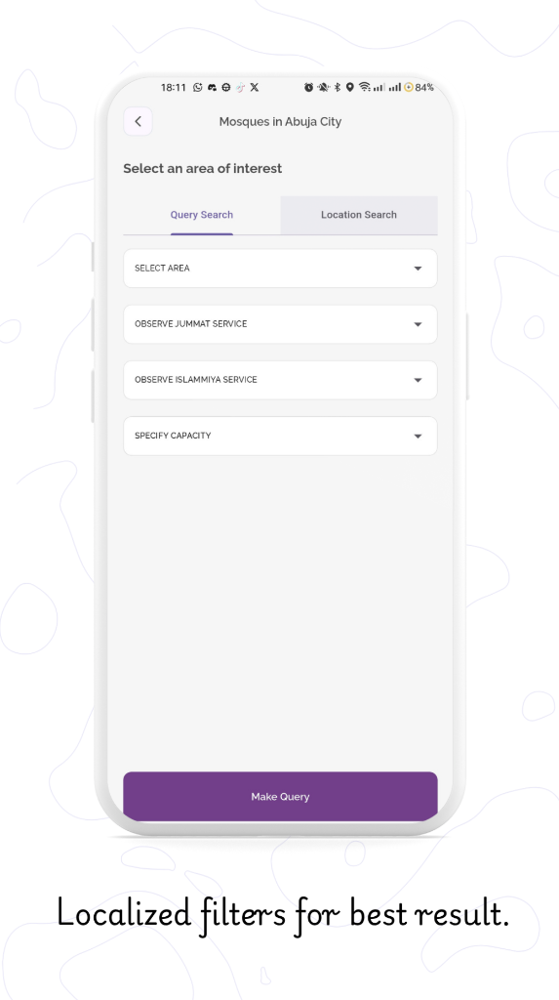
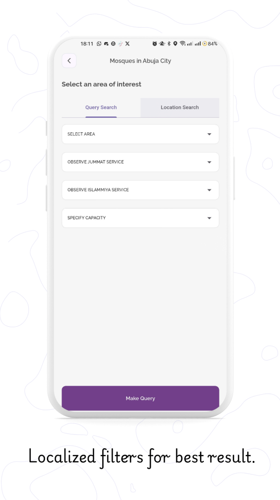

Soole: Car Pooling Platform
Ride-Sharing & Navigation. A comprehensive car pooling application allowing users to offer and find rides. Features real-time tracking, wallet integration, and route optimization. Developed for Soole (Aug 2025 - Jan 2026).
Download APK 
